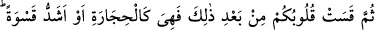
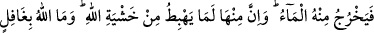
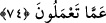
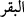

sırlardır, zâhir ve dış şeyler değil.
Akıllı kimse, nefsini alçaltıp teslim alarak ölümden sonrasına uygun amel işleyendir.
Câhil ise, nefsini unutup hevâsına uyandır. Bunu da ancak âlimler ve kâmil insanlar
düşünür ve anlarlar.
Sa’dî de şöyle demiştir:
Başkaları, benim dış güzelliğimi teslîm ederler.
Halbuki içimin kötülüğü yüzünden başım öne eğilmiştir.
Tâvus kuşunun nakış ve süsünü, halk beğenir,
Halbuki o, ayağının çirkinliğinden mahcûbdur.
Kendisine İslâm hakkında soru sorulan biri şöyle demiştir: “İslâm, nefsin muhâlefet
kılıcıyla kesilmesidir. Muhâlefet, nefsin arzularına uymamaktır.”
Serî es-Sakatî şöyle der: “Nefsim benden tam otuz veya kırk sene hurma pekmezine
ceviz koyup yemek istedi. Ben onu dinlemedim.”
Havada oturan bir adam görüldü ve ona: “Bu mertebeye nasıl ulaştın?” denildi. O
adam: “Hevâyı (nefsî işleri) bıraktım. Hevâ bana hizmetçi oldu.”
Yine ehl-i tarîkattan birisine denildi ki: Kendimi inzivâya çekmek istiyorum, ne
dersiniz?” Şu cevâbı verdi: “Önce kalbini gafletten, nefsini boş işlerden ve dilini
mâlâyânîden uzak tut, sonra nereye istersen oraya sülûk et!”
74. (Ne var ki) bunlardan sonra yine kalbleriniz katılaştı. Artık kalbleriniz taş gibi
yahut daha da katıdır. Çünkü taşlardan öylesi var ki, içinden ırmaklar kaynar.
Öylesi de var ki, çatlar da ondan su fışkırır. Taşlardan bir kısmı da Allah korkusuyla
yukardan aşağı yuvarlanır. Allah yapmakta olduklarınızdan gâfil değildir.
“Sonra kalbleriniz katılaştı” hitâbı Peygamber Efendimiz zamânındaki bilginler
içindir. (
) “sonra” edâtı, kalblerin incelik ve yumuşaklığını gerektirecek şeylerin
zikrinden sonra onların katılığının uzun bir süreyi müteâkib meydana geldiğini gösterir.
Meselâ “Siz hâlâ şüphe mi ediyorsunuz?” (el-En’âm, 5/2) âyetinde de, bu durum söz
konusudur.
“Katılık ve katılaşma” diye terceme edilen “kasvet” ve “kasâvet” taşda olduğu gibi
şiddet ve sertlik mânâlarına gelir. Kalblerin sertlik ve şiddetle vasıflandırılması, hak
yoldan ve öğüt dinlemekten uzak olmaları hasebiyledir.